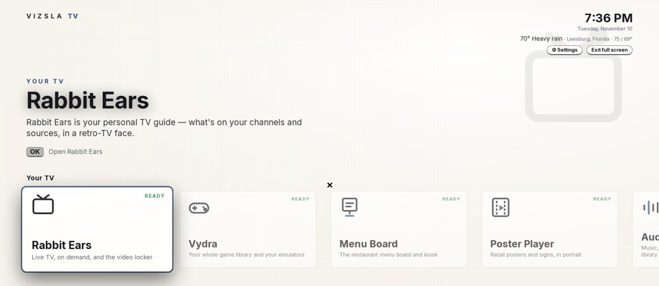
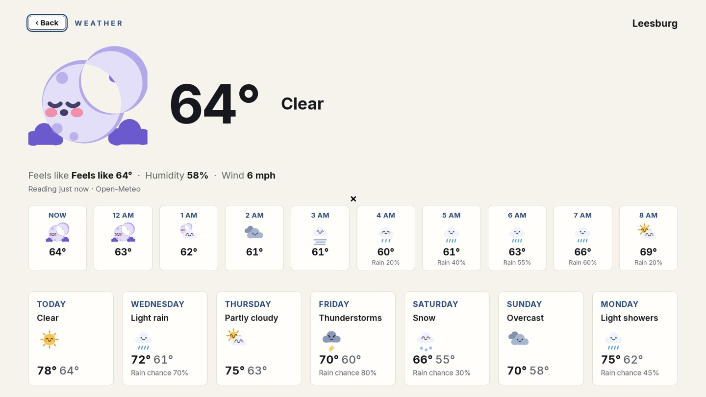
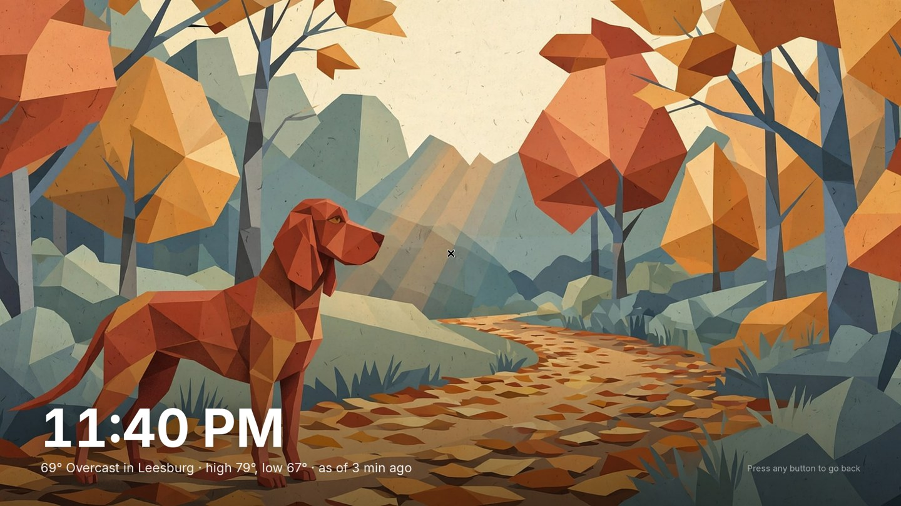

TV Launcher is the face a Vizsla machine shows on the big
screen — and it is not a promise. Version 0.3.7 is
shipped and seated on every machine in the house that runs Vizsla, from the
same Family Catalog the fleet installs from (generation 703, read
13 November 2026). Rabbit Ears, games and media, driven from the couch.

A real capture of the shipped launcher in a test cage, wearing
Paper, the family’s light theme — cropped to the top of the
screen. Every tile reads READY because every app behind it is really
installed. (This frame is build 0.3.3; the current 0.3.7 grows the small
Settings pill at the top right into a full Settings tile — a fresh
capture of that tile is still owed, and this page won’t fake one.)
What it replaces
Two products ask you to keep paying for your own television’s home
screen. TV Launcher is Vizsla’s answer to both — in the box,
with no subscription.
The art TVs. The Frame class of televisions —
Samsung’s The Frame is the famous one — sells you a TV that
doubles as a picture frame, then rents you the pictures: full access to
Samsung’s Art Store is a paid subscription, $4.99 a month on
Samsung’s own page (checked 13 November 2026), with a free tier that
rotates thirty pieces a month, and a Samsung account required. Vizsla’s
answer is already in the box: the wallpaper estate and Art Gallery put art
on your screen — your art, your photos, the family’s own
wallpapers — and when the launcher is left alone it dissolves into
that art by itself, with a big clock and the weather. No art rent, no
account.
The streaming platforms. Roku, Fire TV, Google TV, and
Apple TV each put a home screen between you and your television that is
built as a storefront: sponsored rows, promoted titles, recommendations
chosen for somebody else’s business, and an account watching what
you watch. TV Launcher’s home screen is built the other way. There
is nothing on it that isn’t yours — no ads, no sponsored rows,
no storefront tiles, no “trending,” no “because you
watched,” no autoplay, no account, no trackers. That isn’t a
setting. It’s the design, sworn when the launcher was first built
and kept in every version since.
One honest boundary: TV Launcher is the home, not a content
service. It doesn’t sell or bundle anyone’s channels or
shows. What you watch arrives through your own apps and your own library
— Rabbit Ears for television, Audio Waves for music and podcasts,
your games on their shelf — the way a home screen should have worked
all along.
Settings from the couch
The header’s Settings tile (new in 0.3.7, wearing the same card
grammar as everything else on the face) opens the Quick Access panel:
Power · Updates · Wi-Fi — the three
things a couch actually needs. F2, or the gamepad’s Menu button,
opens it from anywhere on the face. Power actions ask twice, in plain
words, before anything restarts or shuts down. Updates are a read-only
look — checking never installs anything; applying updates stays
with the family updater and its rules. Wi-Fi connects and disconnects
through the system’s own network manager. No trip to a desktop
settings app, mid-movie, ever.
What’s on the face
Eight tiles in the Your TV row. A tile is live only
when the app behind it is actually seated on that machine — the
launcher reads the Family Catalog every time it builds its face, and a
tile whose app isn’t there says so in plain words instead of
pretending. Below the tiles: Continue Watching, which is
Rabbit Ears’ own record of what you played, and the
Games Shelf, a read-only census of your own game library.
The top bar is a wordmark, a clock, and the weather — quiet.
Rabbit EarsLive TV, on demand, and the video locker — your personal TV guide in a retro-TV face.
GamesYour whole game library and your emulators, on one shelf (the tile takes its name from the catalog — today it reads Vydra).
Menu BoardThe restaurant menu board and kiosk, opening right inside the TV window.
Poster PlayerRetail posters and signs, in portrait, rotating on your schedule.
Audio WavesMusic, podcasts and radio — your whole library, in a big-screen face.
Art GalleryThe television as a living painting — stills and video, with a clock, the weather, and a sleep timer when you want them.
WeatherBuilt into the launcher itself: your forecast, big and glanceable, always stamped with how fresh the reading is.
SpeedtestAlso built in: ping, download and upload on three big dial gauges, with the verdict in plain words.

The built-in Weather face — a real capture of build
0.3.6 in a test cage (Paper). The illustrated conditions are family-original
characters, drawn in the Weather app mascot’s own hand for every one
of the 27 weather codes — never a bare number, never an emoji, never
a blank. The one Back at the top left is the only Back on the face; that
is a rule here, not an accident.
Built for the couch
The launcher is driven from the couch remote first — the house
remote is a HAOBO G10S Pro, and the launcher was proven against its real
key presses, not a guess about them. Arrows (or a gamepad’s D-pad)
walk the tiles; the focused card lifts and glows while its siblings dim,
so the couch can always find the focus; OK opens. It launches fullscreen
and covers everything, dock included.
And Back means home. That is standing law, fixed in
0.3.3 and proven frame-by-frame in both family themes: from Weather, from
Speedtest, from a panel, from anywhere the launcher itself holds the
screen, the remote’s Back returns you to the app-select home. On the
bare home grid, Back simply puts the focus back on the first tile —
it never dumps you out to the desktop, and Back can never quit. Inside
Vizsla TV there is exactly one Back, and the shell owns it, so no face
grows a second one. The honest limit, stated the way the builders stated
it: when another app has taken over the whole screen, its keys are its
own — so the family’s TV apps carry their own visible
“Back to TV” return, the way Art Gallery and Audio Waves do.
Left alone, it becomes a picture
Leave the launcher alone and it dissolves — the shelves fade and
the standing wallpaper estate takes the screen, with a big clock and a
weather line. Any button brings the launcher back. This is the quiet half
of the Frame-TV answer: the art was never a subscription here. It was
already on the machine, in the box, because it’s yours.

The idle face — a real capture from the launcher’s
first shipped generation (build 0.1.2, test cage), and the same dissolve
the current build still performs: wallpaper art, a big clock, the weather
with its as-of stamp, and “press any button to go back.” The
wallpaper is the family’s own vizsla art — no art store, no
rent.
The honest status
TV Launcher 0.3.7 is shipped: published in the Family Catalog
(generation 703) and seated, hash-verified, on all three machines that run
Vizsla in this house. Like every family app, a new version lands at the
next launch on each machine — nothing restarts your TV mid-evening
to update itself. The pictures on this page are real captures of shipped
builds in test cages, labeled with their build numbers; where a capture
of the newest build is still owed — the 0.3.7 Settings tile is the
known one — the caption says so instead of dressing up an older or
designed frame as the live app.